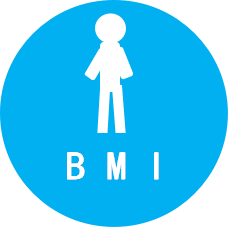

健康指标
血糖正常，请继续保持。
血压正常，请继续保持。

BMI正常，请继续保持。
心率正常，请继续保持。

体温正常，请继续保持。
厕所正常，请继续保持。
淋浴正常，请继续保持。
饮食正常，请继续保持。
| 低血糖 | 正常血糖 | 糖尿病 | 糖耐量受损 | 空腹血糖受损 |
|---|
| 低血压 | 正常血压 | 高血压 | 1级高血压 | 2级高血压 | 3级高血压 |
|---|
| 偏瘦 | 正常 | 超重 | 偏胖 | 肥胖 | 重度肥胖 |
|---|
| 窦性心率过缓 | 心率过缓 | 心率正常 | 心率过速 |
|---|
| 体温过低 | 体温正常 | 低烧 | 中低烧 | 高烧 |
|---|
| 时间过短 | 时间正常 | 时间过长 |
|---|
| 时间过短 | 时间正常 | 时间过长 |
|---|
| 次数过少 | 次数正常 | 次数过多 |
|---|
身体数值达标率
健康报告
健康风险评价是估计具有一定健康特征的个人会不会
在一定时间内发生某种疾病或健康的结果。
| 极差 | 差 | 一般 | 良 | 优 |
|---|
分析:根据各项指标，老人4月-5月身体健康评级为一般